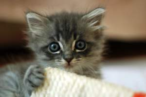

Cats in Baskets
We've all heard about The Cat in the Hat, but what about cats in baskets? Well, I would never want to ignore those, so here is a little collection of some cats in baskets!
MORE
Recent Kitty Cats


Kitten on the Counter
June 3, 2016
Location: My Bathroom
He's striped! Look at his little pink nose, it's so cute! And the whiskers! D'awww... Don't you wanna just scratch behind his little ears?
